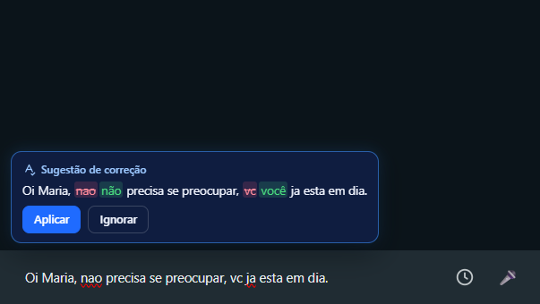

Todas as suas contas de WhatsApp.
Em uma só janela.
Atenda vários números ao mesmo tempo, leia os áudios em texto, grave ligações e não perca nenhum cliente. Grátis, para Windows.
Windows 10 e 11 (64 bits) · atualiza sozinho

Cada número no seu lugar.
Atendimento, cobrança, pessoal: cada conta tem a própria sessão, lado a lado. Troque com um clique ou com Ctrl+1, Ctrl+2. O nome e a foto vêm do próprio WhatsApp.

Áudio de três minutos?
Leia em dez segundos.
Cada áudio vira texto logo abaixo dele, dentro da conversa. Feito no seu computador, sem internet e sem marcar como ouvido.

Saiba quem é quem num relance.
"Cliente novo", "Em negociação", "Pago". Crie as suas etiquetas, escolha a cor e marque direto na lista de conversas. Elas aparecem escritas ao lado do nome.

Escreva agora. Envie na hora certa.
Agende a mensagem para qualquer dia e hora. Na hora marcada, o Janelix avisa e abre a conversa com o texto pronto. Quem aperta enviar é sempre você.

Escreva certo, sem pensar nisso.
Enquanto você digita, a correção aparece acima do campo. Um clique e pronto. Se não quiser, ignore.

Ligações que não se perdem.
Grave as ligações feitas pelo computador, ouça de novo quando precisar e transforme em texto com um clique, separando o que você e o cliente falaram.


Do seu jeito: Azul, Claro ou Escuro.
Passe o mouse (ou toque) para ver os três.


Suas conversas ficam com você.
Nada vai para servidor nosso. Os dados ficam no seu computador, cifrados, e o Janelix pode ser bloqueado com senha. Nenhuma mensagem é enviada sozinha.

Pronto em dois minutos.
Baixe, abra e leia o QR Code com o celular. Sem cadastro, sem custo.
Baixar para WindowsNovidades da versão 2.0.0
- BookWhats agora se chama Janelix: contas e dados continuam, sem ler o QR Code de novo
- Três temas: Azul, Claro e Escuro
- Agendar mensagem: na hora marcada a conversa abre com o texto pronto para você enviar
- Etiquetas com o nome e a cor que você quiser
- Aba Ligações: ouvir e transcrever as ligações gravadas
- Nome e foto de cada conta vêm do próprio WhatsApp
Perguntas
É seguro? Minhas conversas vão para algum servidor?
Não. O Janelix abre o WhatsApp Web oficial no seu computador. Conversas, áudios e transcrições ficam só na sua máquina, guardados com a proteção da sua conta do Windows.
O Janelix envia mensagens sozinho?
Nunca. Mesmo nas mensagens agendadas, ele só deixa o texto pronto na conversa: quem envia é sempre você.
Quanto custa?
Nada. É grátis.
Como atualizo?
Não precisa fazer nada: quando sai uma versão nova, o Janelix baixa e instala sozinho, sem perder contas nem dados.
O Windows mostrou um aviso ao abrir o instalador. E agora?
Na primeira instalação o Windows pode mostrar "O Windows protegeu o computador". Clique em Mais informações e depois em Executar assim mesmo. As atualizações seguintes não mostram esse aviso.